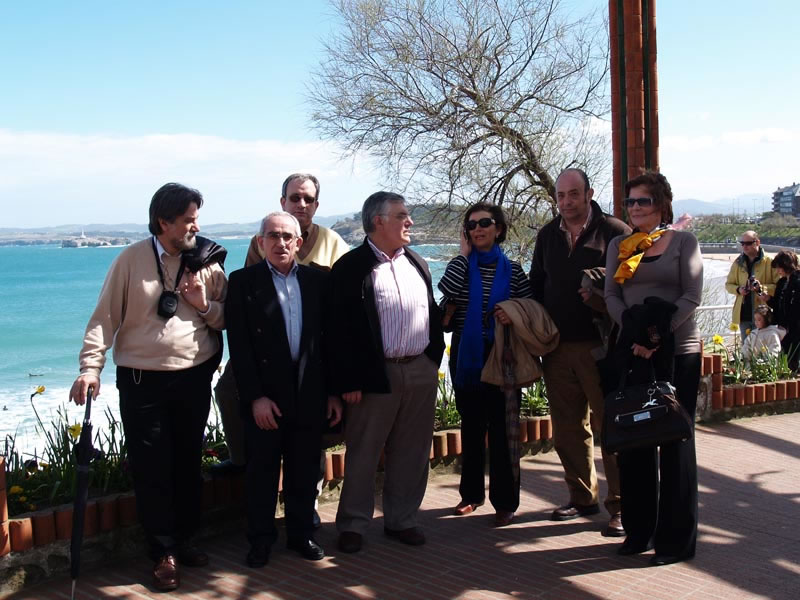

Encuentro en SantoñaAnterior | Inicio | Siguiente |
|
 Nos hicimos, bueno, les hice, para ser más exactos, la foto de familia, unos pocos, en los Jardines de Piquío. Ellos son Manolo Sánchez, Jaime Merino, Carlos Bitaubé, Enrique Peraita, Mari Carmen, Fernando Ferrer y Maru, esposa de Enrique, al que, por cierto, tenemos que agradecer que esa mañana, gracias al paseo que dimos, perdiéramos unos pocos de kilos.... |